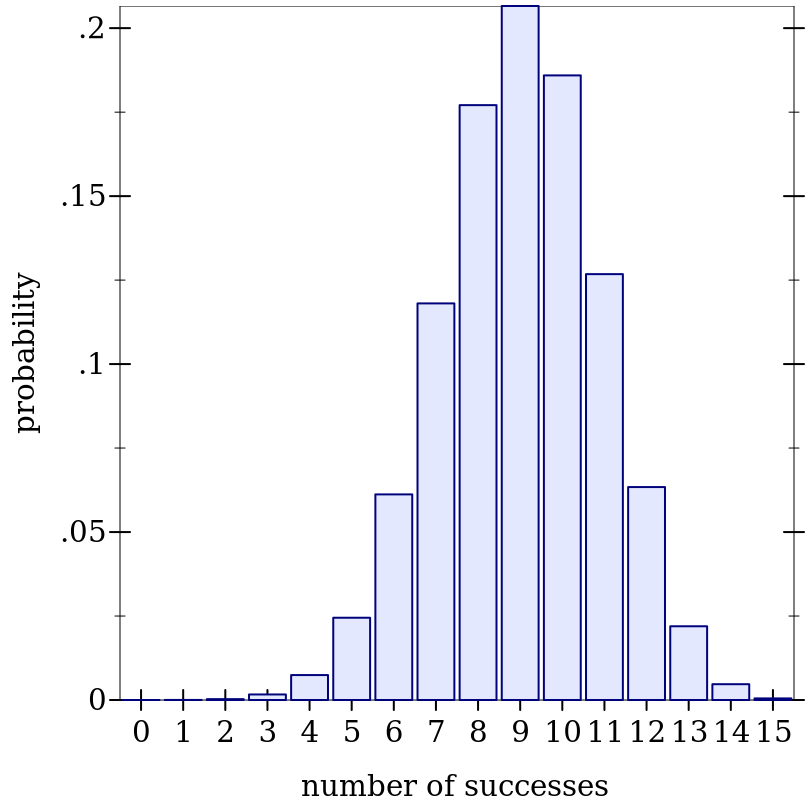
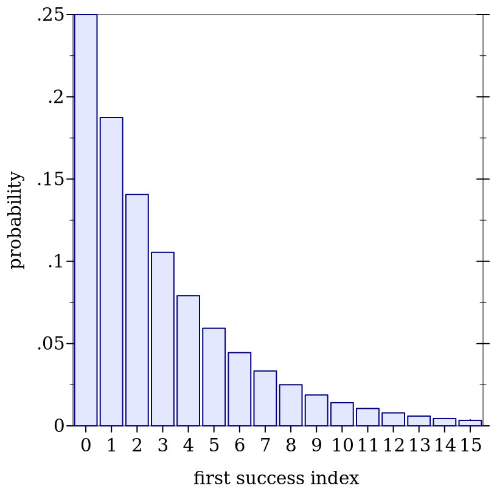
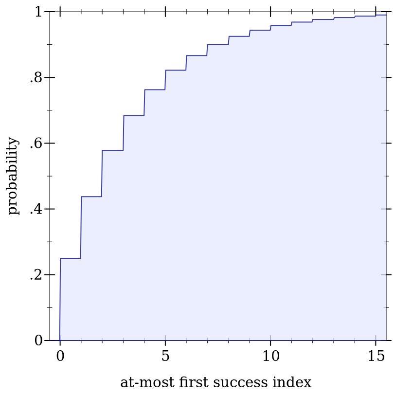
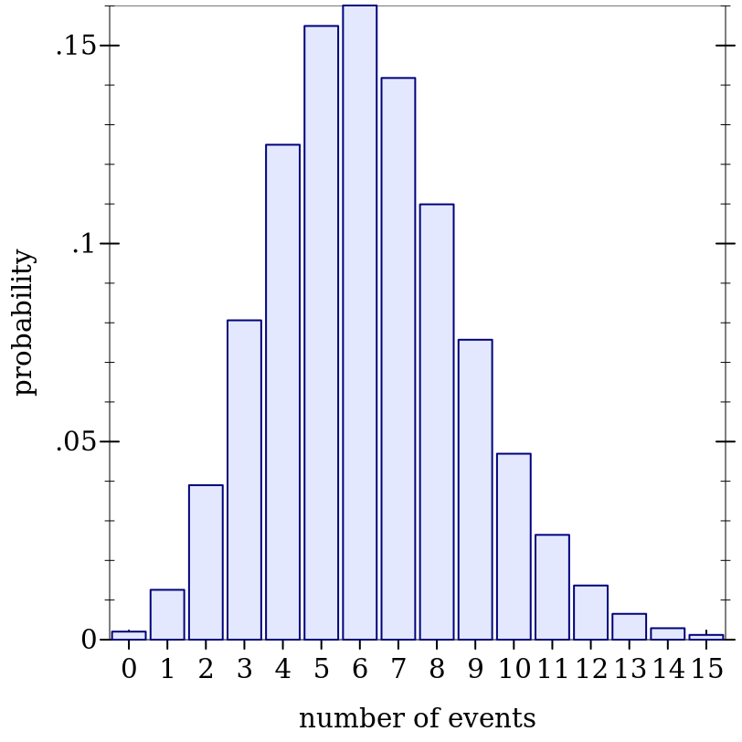
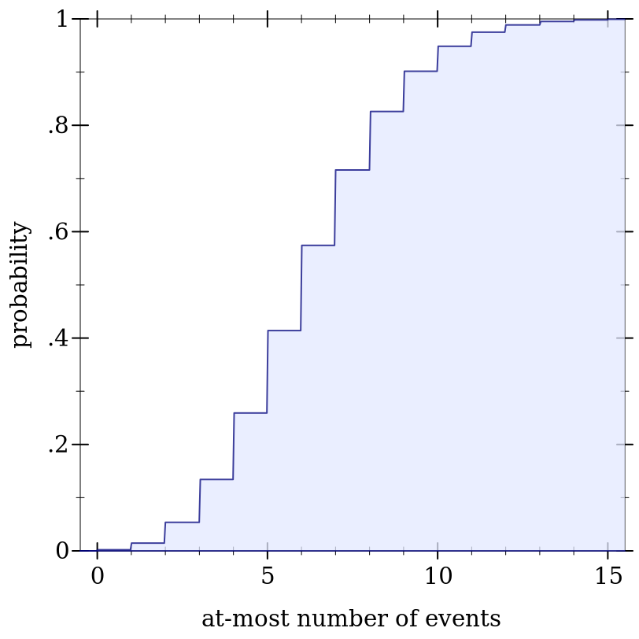

9.4 整数分布家族
在数学上,整数分布通常以两种方式之一定义:在扩展实数上,或在扩展整数上。 最常见的定义是使用扩展小数, 所以下面的 distribution object 构造函数返回类型为 Real-Dist 的对象。
(另一个原因是,扩展整数对应的类型是 (U Integer +inf.0 -inf.0) 。 这种类型的值在 Racket 的库中几乎没有支持)。
这给我们留下了一个难题和两个用户应该注意的设计决定。 这个难题是,当一个整数分布在实数上被定义时,它有一个 cdf, 但 no well-defined pdf: 除了在整数点上,pdf 将是零,在那里它将是未定义的。
不幸的是,一个没有 pdf 的整数分布几乎是无用的。 用度量理论的说法,pdf 是相对于计数度量定义的,而 cdf 是相对于 Lebesgue 度量定义的。 因此,这些整数分布的 pdf 是定义在整数上的 pdf,而其 cdf 是定义在实数上的。
它们的定义域是整数。
将一个整数的 pdf 应用于非整数,几乎可以肯定是一个逻辑错误,而当程序返回一个明显合理的值时,这就更难发现了。
如果这个设计选择被证明是错误的,并且我们把 pdf 改为返回 0.0, 这应该会影响到很少的程序。 从 0.0 到 +nan.0 的改变可能会破坏许多程序。
定义在扩展整数上的整数分布并非不可能,如果有明确的需要, 可能会出现在未来版本的 math/distributions 中。
9.4.1 伯努利分布
Wikipedia: Bernoulli Distribution.
syntax
procedure
(bernoulli-dist prob) → Bernoulli-Dist
prob : Real
procedure
(bernoulli-dist-prob d) → Flonum
d : Bernoulli-Dist
(bernoulli-dist prob) 等同于 (binomial-dist 1 prob), 但对它的操作更快。
> (define d (bernoulli-dist 0.75)) > (map (distribution-pdf d) '(0 1)) '(0.25 0.75)
> (map (ordered-dist-cdf d) '(0 1)) '(0.25 1.0)
> (define d (binomial-dist 1 0.75)) > (map (distribution-pdf d) '(0 1)) '(0.25 0.75)
> (map (ordered-dist-cdf d) '(0 1)) '(0.25 1.0)
9.4.2 二项式分布
Wikipedia: Binomial Distribution.
syntax
procedure
(binomial-dist count prob) → Binomial-Dist
count : Real prob : Real
procedure
(binomial-dist-count d) → Flonum
d : Binomial-Dist
procedure
(binomial-dist-prob d) → Flonum
d : Binomial-Dist
> (define d (binomial-dist 15 0.6))
> (plot (discrete-histogram (map vector (build-list 16 values) (build-list 16 (distribution-pdf d)))) #:x-label "number of successes" #:y-label "probability") 
> (plot (function-interval (λ (x) 0) (ordered-dist-cdf d) -0.5 15.5) #:x-label "at-most number of successes" #:y-label "probability")

9.4.3 几何分布
Wikipedia: Geometric Distribution.
syntax
procedure
(geometric-dist prob) → Geometric-Dist
prob : Real
procedure
(geometric-dist-prob d) → Flonum
d : Geometric-Dist
> (define d (geometric-dist 0.25))
> (plot (discrete-histogram (map vector (build-list 16 values) (build-list 16 (distribution-pdf d)))) #:x-label "first success index" #:y-label "probability") 
> (plot (function-interval (λ (x) 0) (ordered-dist-cdf d) -0.5 15.5) #:x-label "at-most first success index" #:y-label "probability" #:y-max 1) 
9.4.4 泊松分布
Wikipedia: Poisson Distribution.
syntax
procedure
(poisson-dist mean) → Poisson-Dist
mean : Real
procedure
(poisson-dist-mean d) → Flonum
d : Poisson-Dist
> (define d (poisson-dist 6.2))
> (plot (discrete-histogram (map vector (build-list 16 values) (build-list 16 (distribution-pdf d)))) #:x-label "number of events" #:y-label "probability") 
> (plot (function-interval (λ (x) 0) (ordered-dist-cdf d) -0.5 15.5) #:x-label "at-most number of events" #:y-label "probability" #:y-max 1) 